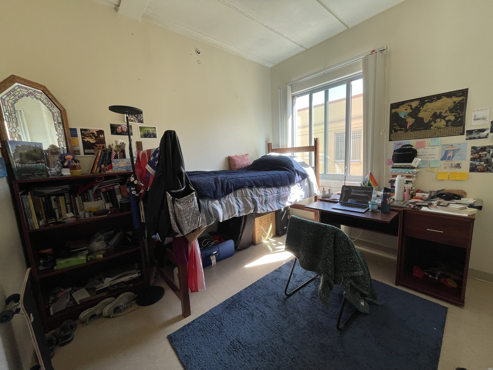

The Dallas & Elizabeth Dort and Ann & Alfred Goldstein Residence Halls provide accommodations for approximately 150 students in apartment-style suites, each including its own living room, kitchenette and bathroom facilities. The Dort and Goldstein Residence Halls are located near the Recreation Center on the Pei Campus. The apartment bedrooms in this area are approximately 12′ x 9′ and are either three or four bedrooms.
TThe Lee & Bob Peterson Residence Hall, Ulla R. Searing Residence Hall, and the V and Y residence halls are lodge-style structures that feature studio, two- and three-bedroom apartments, each with its own kitchenette and bathroom. The halls feature a dramatic two-story floor plan with central common areas, timbered ceilings, and a keyless entry system. These side-by-side residence halls are sometimes called “Letter Dorms” because they were originally designated as V, W, X, and Y Dorms before two were officially named. The apartment bedroom sizes are approximately 12′ x 9′.
 {% endblock %}